Cátedra 9: Segunda Ley — Clausius y Kelvin
La dirección de los procesos espontáneos: el calor siempre fluye del más caliente al más frío, y ninguna máquina puede convertir calor íntegramente en trabajo sin dejar traza en el entorno.
Temas que cubre
- Límites de la Primera Ley: no establece en qué dirección ocurren los procesos
- Principio de Clausius: el calor fluye espontáneamente del cuerpo más caliente al más frío
- Enunciado de Kelvin-Planck: ningún proceso puede extraer calor de un único foco y convertirlo íntegramente en trabajo
- Equivalencia de los dos enunciados de la Segunda Ley
- Irreversibilidad macroscópica y la "flecha del tiempo"
- Máquina térmica: recibe calor de foco caliente, realiza trabajo, expulsa calor al foco frío
- Refrigerador: el proceso inverso a la máquina térmica (requiere trabajo externo)
Conceptos clave
Principio de Clausius
Es imposible construir un proceso cuyo único efecto sea transferir calor de un cuerpo frío a uno caliente. Esto no viola la Primera Ley (la energía se conservaría), pero nunca se observa en la naturaleza: el calor siempre fluye espontáneamente de $T_c$ a $T_f$, con $T_c > T_f$.
Enunciado de Kelvin-Planck
Es imposible un proceso cíclico cuyo único efecto sea absorber calor de un único foco y producir una cantidad equivalente de trabajo. Toda máquina térmica real debe expulsar algo de calor a un foco frío: no se puede convertir calor en trabajo con 100% de eficiencia.
Máquina térmica
Opera entre dos focos: uno caliente a temperatura $T_c$ y uno frío a $T_f$ (con $T_c > T_f$). Absorbe calor $Q_c$ del foco caliente, produce trabajo $W$ y expulsa calor $Q_f$ al foco frío. La eficiencia $\eta = W/Q_c < 1$.
Refrigerador (bomba de calor)
Opera como una máquina térmica al revés: consume trabajo externo $W$ para extraer calor $Q_f$ del foco frío y expulsar calor $Q_c = Q_f + W$ al foco caliente. No viola Clausius porque requiere trabajo externo.
Fórmulas fundamentales


Qué hay que entender
- La Primera Ley dice cuánta energía hay; la Segunda Ley dice en qué dirección va. Ambas son necesarias.
- Los dos enunciados (Clausius y Kelvin) parecen distintos pero son lógicamente equivalentes: si pudieras violar uno, podrías violar el otro.
- La Segunda Ley no dice que no se puede enfriar un refrigerador (eso viola Clausius). Dice que si lo haces, necesitas trabajo externo.
- La "flecha del tiempo" termodinámica viene de la Segunda Ley: los procesos macroscópicos irreversibles evolucionan en la dirección que aumenta el desorden (entropía).
- La eficiencia $\eta$ siempre se calcula con respecto a $Q_c$ (calor absorbido del foco caliente), no con respecto al trabajo total.